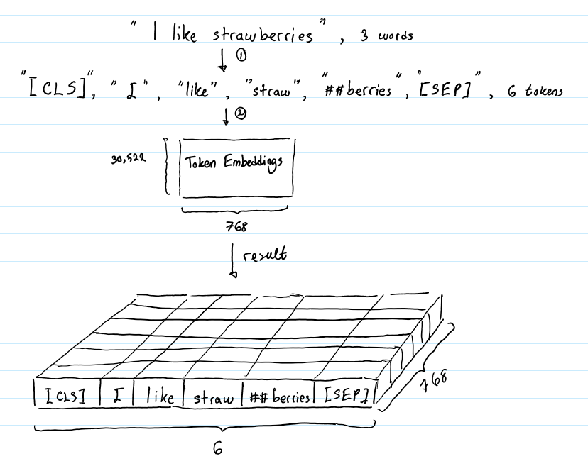
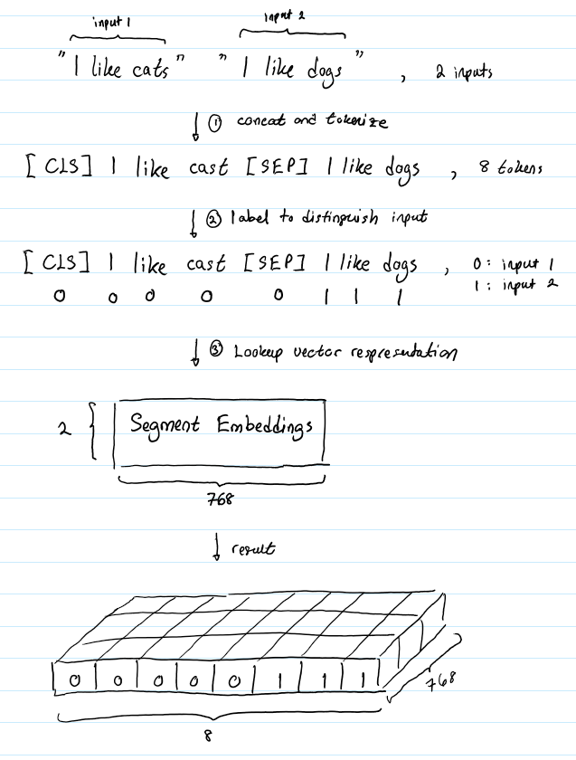
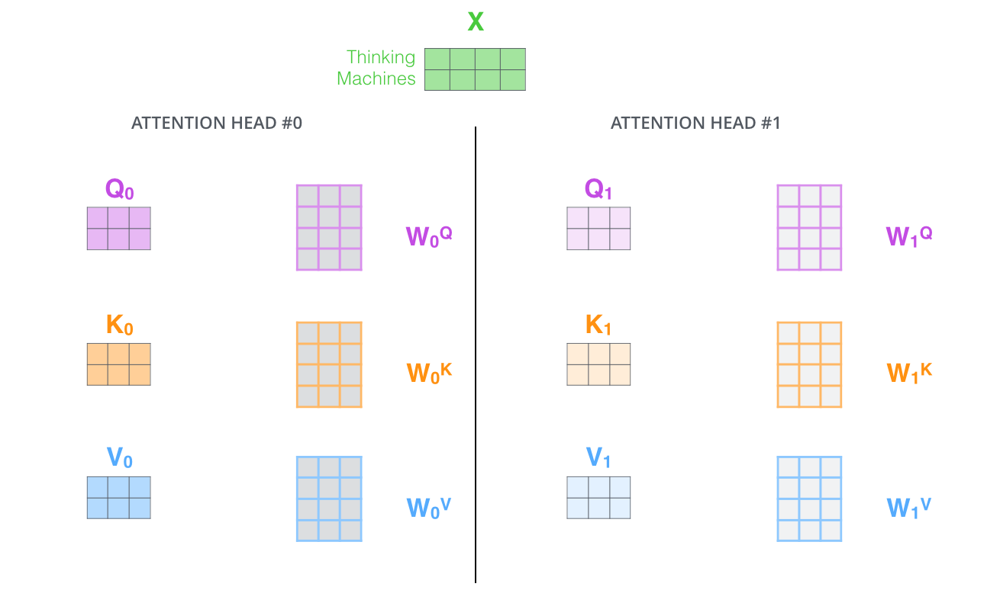

bert原理
BERT（Bidirectional Encoder Representations from Transformers）是一种预训练模型，旨在通过考虑所有层中的双侧上下文信息来得到深度的双向表示。该表示连接上一层输出层后，仅需微调训练就可以在很多 NLP 任务中取得惊人的效果。
Bert结构
Bert的输入
在BERT中，输入的向量是由三种不同的embedding求和而成，分别是：
- token embedding：单词本身的向量表示
- segment embedding：用于区分两个句子的向量表示
- position embedding：单词位置信息的编码表示
Token embedding
token embedding 层是要将各个词转换成固定维度的向量。在BERT中，每个词会被转换成768维的向量表示。

输入文本在送入token embeddings 层之前要先进行tokenization处理。此外，两个特殊的token会被插入到tokenization的结果的开头 ([CLS])和结尾 ([SEP]) 。它们视为后面的分类任务和划分句子对服务的。
Token Embeddings 层会将每一个wordpiece token转换成768维的向量。这样，例子中的6个token就被转换成了一个(6, 768) 的矩阵或者是(1, 6, 768)的张量（如果考虑batch_size的话）。
Segment embedding
BERT 能够处理对输入句子对的分类任务。这类任务就像判断两个文本是否是语义相似的。句子对中的两个句子被简单的拼接在一起后送入到模型中。那BERT如何去区分一个句子对中的两个句子呢？答案就是segment embeddings.

Segment Embeddings 层只有两种向量表示。前一个向量是把0赋给第一个句子中的各个token, 后一个向量是把1赋给第二个句子中的各个token。如果输入仅仅只有一个句子，那么它的segment embedding就是全0。
Position Embeddings
Transformers无法编码输入的序列的顺序性，加入position embeddings会让BERT理解输入句子的位置信息。
如何设计positional embedding？
- 为每个时间步（单词在句子中的位置）输出唯一的编码
- 即便句子长度不一，句子中两个时间步之间的距离应该是“恒定”的
- 模型可以轻易泛化到更长的句子上
- PE必须是确定的
论文中采用的positional embedding：偶数位置，使用正弦编码，在奇数位置，使用余弦编码
$$
PE(pos,2i)=sin(\frac{pos}{10000^{2i/d_{model}}})
$$
$$
PE(pos,2i+1)=cos(\frac{pos}{10000^{2i/d_{model}}})
$$
BERT能够处理最长512个token的输入序列。论文作者通过让BERT在各个位置上学习一个向量表示来将序列顺序的信息编码进来。这意味着Position Embeddings layer 实际上就是一个大小为 (512, 768) 的lookup表，表的第一行是代表第一个序列的第一个位置，第二行代表序列的第二个位置，以此类推。因此，如果有这样两个句子“Hello world” 和“Hi there”, “Hello” 和“Hi”会由完全相同的position embeddings，因为他们都是句子的第一个词。同理，“world” 和“there”也会有相同的position embedding。
transformer中设计的Position是一个固定向量，但是Google的BERT中的位置编码是可学习的，通过一个可学习的嵌入层来实现的。
- 固定位置编码：
- 优点：计算简单、无需额外训练，能够处理任意长度的序列。
- 缺点：可能无法针对特定任务进行优化，灵活性较差。
- 可学习位置编码：
- 优点：能够根据具体任务数据进行优化，灵活性更高，通常在实际任务中表现更好。
- 缺点：需要额外的训练参数，模型复杂度略有增加。
网络结构
BERT的主要结构是transformer，一个BERT预训练模型的基础结构是标准transformer结构的encoder部分，一个标准transformer结构如下图所示，其中右边的部分就是BERT中使用的encoder部分。

一个transformer的encoder单元由一个multi-head-Attention + Layer Normalization + feedforword + Layer Normalization 叠加产生，BERT的每一层由一个这样的encoder单元构成。在比较大的BERT模型中，有24层encoder，每层中有16个Attention，词向量的维度是1024。在比较小的BERT模型中，有12层encoder，每层有12个Attention，词向量维度是768。在所有情况下，将feed-forward/filter 的大小设置为 4H（H为词向量的维度），即H = 768时为3072，H = 1024时为4096。
Multi-Headed Attention
Self Attention
-
self-attention出现的原因
-
为了解决RNN、LSTM等常用于处理序列化数据的网络结构无法在GPU中并行加速计算的问题
-
由于每个目标词是直接与句子中所有词分别计算相关度(attention)的，所以解决了传统的RNN模型中长距离依赖的问题，通过attention，可以将两个距离较远的词之间的距离拉近为1直接计算词的相关度，而传统的RNN模型中，随着距离的增加，词之间的相关度会被削弱。
-
-
单个self-attention 的计算过程
self-attention是Transformer用来将其他相关单词的“理解”转换成我们正在处理的单词的一种思路
-
首先，self-attention会计算出三个新的向量，在论文中，向量的维度是512维，我们把这三个向量分别称为Query、Key、Value，这三个向量是用embedding向量与一个矩阵相乘得到的结果，这个矩阵是随机初始化的，维度为（64，512）注意第二个维度需要和embedding的维度一样，其值在BP的过程中会一直进行更新，得到的这三个向量的维度是64。

-
计算self-attention的分数值，该分数值决定了当我们在某个位置encode一个词时，对输入句子的其他部分的关注程度。这个分数值的计算方法是Query与Key做点乘，以下图为例，首先我们需要针对Thinking这个词，计算出其他词对于该词的一个分数值，首先是针对于自己本身即q1·k1，然后是针对于第二个词即q1·k2。

-
接下来，把点成的结果除以一个常数，这里我们除以8，这个值一般是采用上文提到的矩阵的第一个维度的开方即64的开方8，当然也可以选择其他的值，然后把得到的结果做一个softmax的计算。得到的结果即是每个词对于当前位置的词的相关性大小，当然，当前位置的词相关性肯定会会很大。

-
下一步就是把Value和softmax得到的值进行相乘，并相加，得到的结果即是self-attention在当前节点的值。

在实际的应用场景，为了提高计算速度，我们采用的是矩阵的方式，直接计算出Query, Key, Value的矩阵，然后把embedding的值与三个矩阵直接相乘，把得到的新矩阵 Q 与 K 相乘，乘以一个常数，做softmax操作，最后乘上 V 矩阵。
这种通过 query 和 key 的相似性程度来确定 value 的权重分布的方法被称为scaled dot-product attention。


-
self attention中Q、K、V都是通过一个线性变换得到，其维度可自定义，但一般定义成$embedding_size \times embedding_size/head$
Multi-Headed Attention
multi-headed attention机制理解起来很简单，就是说不仅仅只初始化一组Q、K、V的矩阵，而是初始化多组，tranformer是使用了8组，所以最后得到的结果是8个矩阵。


Multi-Head Self-Attention将多个不同单头的Self-Attention输出Concat成一条，然后再经过一个全连接层降维输出，如下图所示，右边的部分即为一个multi-head attention的计算过程，其中的h指的是attention的个数，即上面例子中的n。
经过concat和全连接层降维后，multi-headed attention输出的向量维度与输入的向量维度一致
Add & Norm
Add
Add是对得到的$X_{Attention}$以及X做一个相加。
$$
X_{Attention} = X_{Attention} + X
$$
Add的目的和ResNet的跳跃连接目的一样，使用残差，相当于每次更新时，导数项上加了一个恒等项1，即使原来的导数很小，这时误差仍然可以有效的反向传播，可以减少梯度消失和梯度爆炸的问题。
Layer Normalization
Normalization的目的是将数据送入激活函数之前进行归一化，避免输入数据落在激活函数的饱和区（两端）。
但是Self-Attention为什么选择Layer Normalization而不是Batch Normalization？
Bach Normalization与Layer Normalization的区别：
假设我们有10行3列的数据，即我们的batchsize = 10，每一行数据有三个特征，假设这三个特征是【身高、体重、年龄】。
那么BN是针对每一列（特征）进行缩放，例如算出【身高】的均值与方差，再对身高这一列的10个数据进行缩放。体重和年龄同理。这是一种**“列缩放”**。
而layer方向相反，它针对的是每一行进行缩放。即只看一笔数据，算出这笔所有特征的均值与方差再缩放。这是一种**“行缩放”**。
在NLP领域中，如果我们将一批文本组成一个batch，那么BN的操作方向是，对每句话的第一个词进行操作。但语言文本的复杂性是很高的，任何一个词都有可能放在初始位置，且词序可能并不影响我们对句子的理解。而BN是针对每个位置进行缩放，这不符合NLP的规律。而LN则是针对一句话进行缩放的，且LN一般用在第三维度，如[batchsize, seq_len, dims]中的dims，一般为词向量的维度，或者是RNN的输出维度等等，这一维度各个特征的量纲应该相同。因此也不会遇到上面因为特征的量纲不同而导致的缩放问题。

Feed Forword Layer
这里就是将Multi-Head Attention得到的提炼好的向量再投影到一个更大的空间（论文里将空间放大了4倍）在那个大空间里可以更方便地提取需要的信息（使用Relu激活函数），最后再投影回token向量原来的空间。
$$
FFN(x)=ReLu(xW_1+b_1)W_2+b_2
$$
模型训练
训练任务
Masked language Model
随机掩盖掉一些单词，然后通过上下文预测该单词。BERT中有15%的wordpiece token会被随机掩盖，这15%的token中80%用[MASK]这个token来代替，10%用随机的一个词来替换，10%保持这个词不变。这种设计使得模型具有捕捉上下文关系的能力，同时能够有利于token-level tasks例如序列标注。
-
为什么选中的15%的wordpiece token不能全部 用
[MASK]代替，而要用 10% 的 random token 和 10% 的原 token？[MASK]是以一种显式的方式告诉模型『这个词我不告诉你，你自己从上下文里猜』，从而防止信息泄露。如果[MASK]以外的部分全部都用原 token，模型会学到『如果当前词是[MASK]，就根据其他词的信息推断这个词；如果当前词是一个正常的单词，就直接抄输入』。这样一来，在 finetune 阶段，所有词都是正常单词，模型就照抄所有词，不提取单词间的依赖关系了。以一定的概率填入 random token，就是让模型时刻堤防着，在任意 token 的位置都需要把当前 token 的信息和上下文推断出的信息相结合。这样一来，在 finetune 阶段的正常句子上，模型也会同时提取这两方面的信息，因为它不知道它所看到的『正常单词』到底有没有被动过手脚的。
-
最后怎么利用[MASK] token做的预测？
最终的损失函数只计算被mask掉的token的，每个句子里
[MASK]的个数是不定的。实际代码实现是每个句子有一个 maximum number of predictions，取所有[MASK]的位置以及一些 PADDING 位置的向量拿出来做预测（总共凑成 maximum number of predictions 这么多个预测，是定长的），然后再用掩码把 PADDING 盖掉，只计算[MASK]部分的损失。
Next Sentence Prediction
选择一些句子对A与B，其中50%的数据B是A的下一条句子，剩余50%的数据B是语料库中随机选择的，学习其中的相关性，添加这样的预训练的目的是目前很多NLP的任务比如QA和NLI都需要理解两个句子之间的关系，从而能让预训练的模型更好的适应这样的任务。
Fine Tuning
句子情感分类
如果是做单个句子的情感分类。输入中添加[CLS]，输出在最开始的地方添加一个线性分类器即可。为什么在最开始就可以，因为BERT是基于Transformer，而Transformer是基于self-attention，在每个位置都会得到整个句子的信息，所以不需要放到最后面。

机器翻译
做机器翻译时，在每个输出后添加一个线性分类器，输出每个词语对应的翻译。

同义句判断
将相似对拼接一起输入到模型中，最后一层外接一个线性分类器。